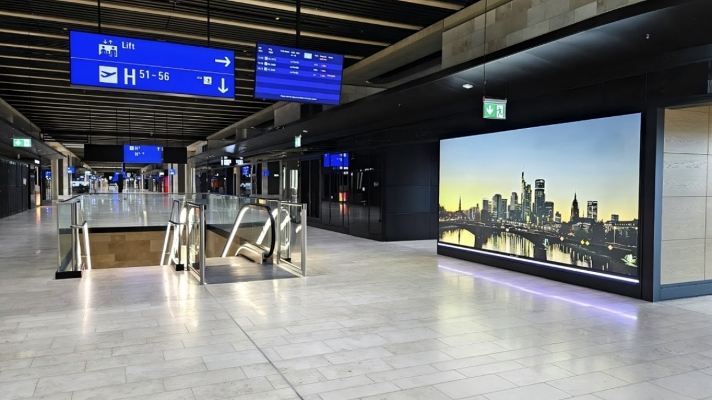
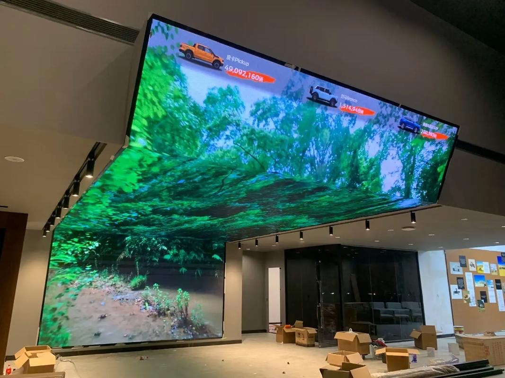

By Cassie
What does a Paraguay LED display importer need to know? Importing LED displays into Paraguay means registering with the national customs directorate, routing cargo through the Paraguay-Parana waterway or overland from Argentine and Uruguayan ports, confirming the standards position with INTN, and specifying for a hot subtropical climate. This 2026 guide explains the process.
Paraguay is a landlocked market in the heart of South America, with demand for LED displays from retail, banking, agribusiness, transport, and events. Almost all professional screens are imported from China, and every one of them crosses a border or travels upriver to reach Asuncion, Ciudad del Este, or Encarnacion.
A Paraguay LED display importer who plans the transit route before dispatch and confirms the documentation clears cargo without difficulty. The two factors that most often delay a project are the landlocked logistics and the informal nature of much of the regional trade.
Importers in Paraguay register with the Direccion Nacional de Aduanas, known as DNA, and operate under a taxpayer number issued by the tax authority, the Subsecretaria de Estado de Tributacion. Foreign trade entries are lodged electronically through the DNA customs system, and the importer of record is legally responsible for the accuracy of the declaration.
A licensed customs broker, known locally as a despachante de aduana, files the declaration on behalf of the importer. The entry states the classification, the customs value, and the origin of each line, and duty and value added tax are assessed on that basis.
| Step | What Is Required | Who Handles It |
|---|---|---|
| Tax registration | Taxpayer number from the tax authority | Importer |
| Broker appointment | Licensed despachante de aduana to file the entry | Importer |
| Import declaration | Electronic entry with classification, value, and origin | Broker |
| Duty and IVA | Assessed on the customs value | Importer |
| Standards evidence | Where a technical requirement applies | Supplier, verified by importer |
| Inland transit | Delivery from the border or river port to site | Importer or broker |
Work with a broker who handles electronic goods and who is experienced in the transit route you intend to use. The treatment of a display, its power supplies, its control cards, and its mounting steel differs, and each line carries its own tariff treatment.
Paraguay develops national standards through the Instituto Nacional de Tecnologia y Normalizacion, known as INTN, which is the country's standards and metrology institute. INTN publishes Paraguayan norms, operates testing facilities, and issues certificates of conformity for products and processes.
Paraguay is a member of the Mercosur customs union, and as a member it adopts many of the regional technical resolutions agreed within that framework. Electrical safety and electromagnetic compatibility are the two areas most relevant to LED displays and their power supplies.
| Requirement | What It Covers | Evidence to Hold |
|---|---|---|
| Certificate of conformity | Product conformity for Paraguay | Certificate or declaration covering the offered model |
| Safety test report | Electrical safety | Report naming the offered model |
| EMC evidence | Electromagnetic compatibility | EMC test report |
| Mercosur alignment | Regional technical resolutions | Evidence that the model meets the applicable resolution |
| Technical file | Drawings and specifications | Complete file held by the importer |
| Spanish labelling | Product information for the market | Label artwork in Spanish |
Confirm the position for the specific model rather than assuming a general rule applies, and keep the technical file after the goods are sold. The authorities may request it during the life of the product, and the same file supports a warranty claim.
Paraguay applies a tariff that is moderate for many imported goods, with value added tax on top. Duty is calculated on the customs value, normally the transaction value adjusted to the agreed Incoterm, and the tax applies to the duty-paid value. A range of minor charges adds to the total, so the effective rate is higher than the headline duty figure.
| Cost Element | Basis | Notes |
|---|---|---|
| Customs duty | Commodity code and customs value | Confirm the rate for the exact code |
| Value added tax | Value plus duty | Standard rate applies |
| Broker fee | Per declaration | Varies by broker and volume |
| Transit and border charges | Per shipment and per border crossing | Significant on the landlocked route |
| Port and storage | Per day after the free period | Mounts if documents are late |
| Inland transport | By distance and route | Confirm delivery to site |
Importers work through a licensed despachante de aduana rather than filing directly. Choose a broker who clears electronic goods rather than general cargo, and confirm that the broker regularly handles the transit route and the border post you intend to use.
Give the broker the complete document pack before dispatch. A shipment that reaches the border or the river port with incomplete paperwork is held while the gap is filled, and storage charges accumulate for every day the container waits.
Paraguay has a hot and humid subtropical climate, with hot summers and warm winters. Summer temperatures frequently exceed 35 degrees Celsius, and the Chaco region in the west is hotter and drier than the eastern region around Asuncion and Ciudad del Este.
For Paraguayan sites, humidity and salt-laden coastal air make sealed cabinets the deciding factor: the COB EF outdoor series (IP65, 3000 nits) and the COB ZH touring series (sealed, 3400–4000 nits) are built for exactly this duty.
| Condition | Risk | Specification Response |
|---|---|---|
| High summer temperature | Thermal stress on power supplies | Higher temperature rating and derating plan |
| High humidity in summer | Condensation inside cabinets | Sealed cabinets and ventilation design |
| Heavy summer storms | Water ingress | High ingress rating and sealed cable entries |
| Frequent lightning | Surges on the incoming supply | Surge protection on the incoming supply |
| Dust in the Chaco region | Cooling path blockage | Filtration and cleaning schedule |
| Grid voltage variation | Damage to driver electronics | Wide-input supplies and voltage stabilisation |
Because Paraguay is landlocked, cargo reaches the country either by barge up the Paraguay-Parana waterway to Villeta and Asuncion, or by sea to an Argentine or Uruguayan port followed by a long overland haul. Buenos Aires and Rosario serve the Argentine route, and Montevideo serves the Uruguayan route, with the Brazilian ports of Santos and Paranagua used for traffic into the Ciudad del Este area.
Air freight lands at Silvio Pettirossi International Airport in Asuncion and is reserved for urgent spare parts and sample units.
| Stage | Typical Duration | What Can Delay It |
|---|---|---|
| Production | 15 to 25 working days | Component availability and queue |
| Inland to port and export | 3 to 5 days | Booking availability |
| Sea freight to the region | Varies by routing | Routing and transshipment |
| River or overland transit | 1 to 3 weeks | Border queues and waterway levels |
| Import clearance | 3 to 7 days | Documentation queries and inspection |
| Total | Approximately 7 to 11 weeks | Add a substantial buffer |
Build a buffer of at least three weeks beyond the quoted transit time. On a landlocked route with a border crossing, small delays accumulate, and a screen tied to an opening date has no room to absorb them.
Ask every candidate the same questions and record the answers. For Paraguayan projects the conformity evidence, the hot-climate specification, the Spanish documentation, and the transit packing matter as much as the price.
| Question | What a Strong Answer Looks Like | Warning Sign |
|---|---|---|
| Conformity for this model | Evidence supplied for the offered model | Evidence promised later |
| Temperature rating | Stated rating and derating for hot sites | Not specified |
| Voltage configuration | Supplies built for the local grid voltage | One voltage offered for all markets |
| Spanish documentation | Supplied with the goods | English only |
| Transit packaging | Crating method described for a long overland leg | Not addressed |
| Spare parts availability | Stated period in writing | No commitment given |
Each mistake is inexpensive to avoid during planning and costly after the goods land. A Paraguay LED display importer who confirms the compliance position, plans the transit route, and specifies for the climate avoids most of them.
Asia Vision Technology manufactures LED displays in Shenzhen and supplies importers, distributors, and contractors across Latin America. The factory supplies the test documentation Paraguayan importers need, builds cabinets for the voltage and climate of the destination, and packs for long transit legs with border crossings.
For Paraguayan projects the company supplies rental cabinets for events, fine pitch screens for retail and corporate work, and outdoor displays rated for high ambient temperature and heavy summer storms. OEM and ODM production is available for distributors building their own range.
